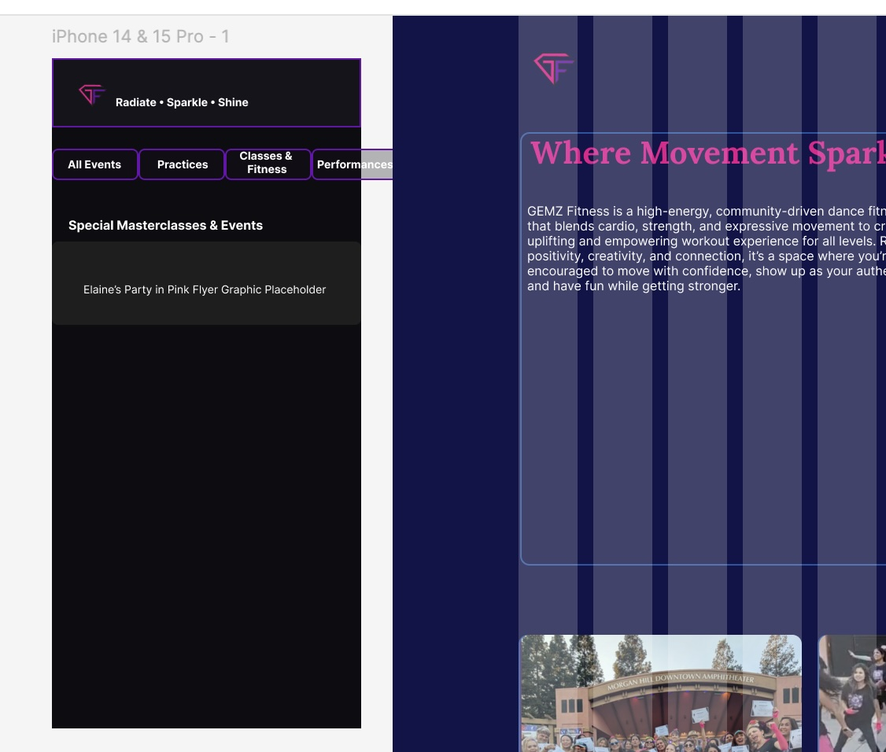

Active Client Fieldwork: GEMZ Fitness LLC Platform
A comprehensive demonstration of analyzing a professional client brief, managing initial discovery parameters, and designing a synchronized web application infrastructure paired with a premium mobile application interface blueprint.
Dual-Track Interface Production Lifecycle
To fulfill the client's commercial expansion strategy, the interface blueprinting lifecycle was executed across two independent, synchronized product tracks to capture both standard desktop users and high-mobility smartphone applications.
1. Early Mobile Spacing Wireframe Sketch Layouts
This dedicated mobile app interface framework focuses directly on spatial wireframing architecture, mobile layout spacing controls, and touch-target button row scales. This viewport ensures seamless readability and brand continuity for members checking schedules or booking sessions on the move.

2. Locked High-Fidelity UI Interface Prototypes
The high-fidelity desktop web blueprint showcases the complete brand migration transformation. It establishes strict spatial grid alignments, typography hierarchies, and interactive component placement tailored for wide desktop monitors.

3. Engineered Layout Component Specifications
The visual framework establishes strict spatial organization across three primary front-facing design components to drive user conversion:
- Side-by-Side Split Hero Fold: Allocates Columns 1–7 for high-contrast Georgia Pro typography layout headers, balanced on the right by Columns 8–12 for dynamic photography assets.
- Core Value Pillars Container: A uniform 3-column array mapping the brand's operational movement philosophy (Radiate, Sparkle, Shine) inside high-contrast sapphire-bordered grid cards.
- Interactive Studio Timetable Widget: A functional dashboard interface utilizing a horizontal weekday sorting filter pill row sitting directly above a full-width chronological schedule tracking lane.
4. Server Deployment Pipeline & CMS Framework (Work in Progress)
While the high-fidelity desktop layout grids, mobile app swatches, and "Deep Ocean Neon" color tokens are fully finalized, the underlying frontend implementation is currently an active work in progress. Subsequent development loops will map these frames into semantic HTML5 structures integrated with a decoupled Headless CMS (Sanity.io or Strapi). This infrastructure will deploy live via Netlify or Vercel, routing directly to the client's custom domain to ensure a modern, high-performance, and maintenance-free operational footprint.
Syllabus Bibliography Verification
Price, E. (2026). Figure 1: Premium native mobile application interface layout specifications [Unpublished design mockups]. Freelance project case study compiled for WDDE 495 Digital Media Capstone, University of Maryland Global Campus.
Price, E. (2026). Figure 2: Client high-fidelity desktop system layout from legacy web footprints to custom wireframe layouts [Unpublished design documentation]. Freelance project case study compiled for WDDE 495 Digital Media Capstone, University of Maryland Global Campus.